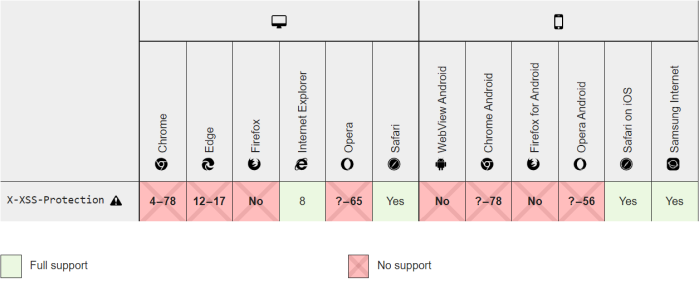

WAF bypass and filter tests
Majority of filters of a Web Application are blacklist
rather than whitelist, which presents opportunities for evasion or bypass
The goal of this phase of our XSS
fuzzing is to develop an understanding of the input filtering or output encoding performed by the
application
Why Websites use FilteringA filter means that probably the parameter
we are testing is vulnerable to XSS! but the developer has created a filter to prevent any malicious HTML.
XSS
is the easiest bug type to prevent against, so why are they creating a filter? And what else have they created
filters around
If the
application performs any validation or
other processing on the submitted data before it is reflected, this will generally affect what kind of XSS payload
is needed.
We need to test:
◇ tags
◇ events
Portswigger has built a XSS cheat sheet that can
help in this process:
https://portswigger.net/web-security/cross-site-scripting/cheat-sheetDOM
Event Handler Bypass: HTML Injection to Script InjectionBecause commonly filtered XSS input
are:
◇ <script> tag
◇ angle brackets ‘<‘ or ‘>’
DOM event handlers can sometimes
provide a simple bypass opportunity, depending on where our
input
ends up within the HTML (XSS injection Contexts)Example:Because of maybe <script> tags are filtered out or encoded,
maybe <img> and <a> are not
Let see how have scripting ability without the <script>
tag
Instead of <script>alert(42)</script>,
we could inject:
<img src="random" onerror=alert(42)> the nonexistent image will
cause the injected onerror event to be triggered
Browser could filter our XSS payloads
(False Negatives)
NOTE: Unless the details of the penetration test specifically require considering
potential victims’ browsers, this should be considered out of scope for a web application penetration
test.
Regardless of the Web Application’s filtering or encoding, the browser could filter our XSS payloads. XSS
payload execution depends on the particular browser that can render the content differently.
• Chrome has
removed their XSS Auditor from the release
78
◇ on older version we can disable it with
root@kali:/# chromium-browser --disable-xss-auditor
• Firefox has not, and
will not implement
X-XSS-Protection• Edge has
retired
their XSS filter from version 17
If the XSS filter is available mean that the browser can put the HTTP
X-XSS-Protection as response header. This is a feature of the Browser that stops pages from loading
when they detect reflected cross-site scripting (XSS) attacks
◇ X-XSS-Protection: 0 → Disables XSS
filtering.
◇ X-XSS-Protection: 1 → Enables XSS filtering. If a cross-site scripting attack is detected, the
browser will sanitize the page (remove the unsafe parts).
◇ X-XSS-Protection: 1; mode=block → Enables XSS
filtering. Rather than sanitizing the page, the browser will prevent rendering of the page if an attack is
detected.
Bibliography:
• Rodolfo Assis 2020 cheatsheet:
https://it.b-ok.global/book/16086758/42740e